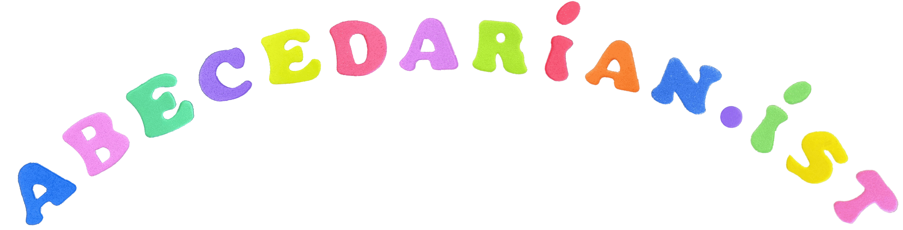

Poems
黄浦黄浦!
Richmond Park
Saturday in Shanghai
στὸν ἔρωτα δοθῆκαν
'Charlotte the Harlot'
Iconoclast's refrain
'It is too much too think of you'
Poet Tree
'It is a small and perfect thing'
Novel Phenomena
Ulysses
(Frag.)
'O God, Thou Final Poet'
'bluegray bath and my yellow limbs'
Translations
On the assembly line I twist screws
周启早 我在流水线上拧螺丝
'Nation's broke, nature still survives'
杜甫 春望